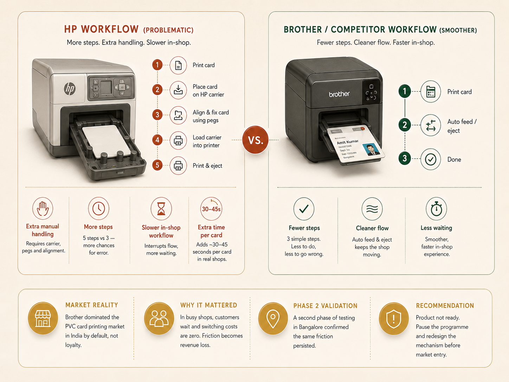

Selected Work
Four studies. Each one changed something that would not have changed without the research.
When the research said stop.
HP had a P0 mandate to enter the PVC card printing market. Research across 5 cities and 30+ jobbers revealed the product would hurt the brand before it helped it. An estimated $1M+ in at-risk launch investment was protected.

Brother owned the PVC card printing market in India through the absence of competition, not loyalty. Jobbers printing hundreds of cards daily in shops smaller than 10sqm were waiting for an affordable alternative. HP's price point landed well. The mandate was P0: move fast.
The appetite was real, but fixing a PVC card onto the HP carrier took significantly more time and effort than Brother's workflow. In a context where customers wait and switching costs are zero, that friction costs revenue. A second phase in Bangalore confirmed the problem persisted. One jobber shared a video circulating on WhatsApp: a Tier 3 city shop owner had already built his own workaround, and it looked remarkably similar to HP's engineered solution.
I gave the team a clear recommendation: this product is not ready, and iterating on a flawed mechanism risks damaging brand trust in a first-entry market. The programme was paused. The roadmap was reconsidered. An estimated $1M+ in direct launch costs was protected.
"Stopping a product from launching badly is not a failure of research. It is research working exactly as it should."
The question nobody had asked.
Hundreds of studies had been done on HP's control panels. None had asked what an ideal experience should be from the user's perspective. I identified that gap, built the evidence base without a brief or dedicated budget, and became the only person in the room with an answer when the redesign mandate arrived.

HP entered a cost optimisation phase with a mandate to redesign the control panel for low to mid-range printers. Through surplus UserTesting credits, piggyback probes in unrelated sessions, and informal conversations with shop owners across literacy levels, I had already been building an evidence base that nobody had commissioned. When the brief arrived, I was the only one ready.
Four design directions were tested across 50 to 100 participants. When two late iterations were too close to call qualitatively, UserTesting analytics on task completion and time-on-task resolved the debate. Users could articulate preferences but not performance. Across all iterations, one truth held: printer users want something that works the first time, without instruction. Not a gadget. A tool.
The final direction: button-dominated, 2-line display, clear text labels, no icons requiring interpretation. Production costs came down. Participants said anyone could use it, from their children to their elderly parents. The design shipped and was recognised at three international design awards, including the Singapore Good Design Award (2025) and the Red Dot Design Award.

The business case was built on a straightforward ROI argument: external vendors were costing $150K annually with turnaround times that created sprint bottlenecks. An in-house lab would pay for itself within the first year. It was built lean, without expensive equipment, relying entirely on process design and research infrastructure that scaled at low cost.
The more significant shift was qualitative. Vendor-run studies felt clinical and scripted. Running sessions in-house gave the flexibility to cross-reference products and experiences not on the discussion guide, which consistently added downstream value. Stakeholder involvement in sessions increased by 30 to 40%. People who watched a session needed far less convincing than people who read a report.
"That outcome started with a research gap I identified on my own, before anyone asked."
Research that changed direction. Twice.
In under a year at Ola, field research directly contradicted the product team's design rationale and led to a committed pivot approved by the Global Head of UX. Then I took full end-to-end ownership of the company's first international market research.

Ola's driver-partner app had a design rationale the team believed in. It had never been tested in the field. Across 15+ sessions combining mid-shift observations with in-depth interviews, I applied cognitive psychology frameworks to observed behaviour and found a consistent pattern: drivers were developing workarounds, making repeated errors, and experiencing decision fatigue exactly where the product expected peak efficiency.
I presented the evidence to the product director, design lead, and Global Head of UX: here is what drivers actually do, here is why the current design works against it, and here is what should change. The team pivoted the driver app's onboarding flow. Post-pivot, the redesigned flow showed measurable improvement in feature discoverability and task clarity, reducing friction and anxiety for drivers navigating the app during an active shift.
I took full ownership of Ola's London launch research: planning, budget, recruitment, logistics, and discussion guide for the company's first international expansion. The research surfaced payment transparency concerns for drivers, expat versus local driver dynamics, and feature gaps against local competitor baselines. The findings mapped to a clear set of design priorities. Covid arrived before they were built. That does not change what the research found.
"It was the first time I presented findings that contradicted a decision already in motion and walked out with a committed change. It was not the last."
Design for users you have not met yet.
Google's Next Billion Users initiative asked what onboarding looks like for someone who has never held a smartphone before. The answer required unlearning almost everything standard UX research assumes about who a user is.

First-time smartphone users in Tier 2 Indian cities across varied literacy levels and languages. Google products had been designed by teams whose assumptions about users bore almost no relation to this context. My job was to surface the gap accurately, without romanticising it.
Three findings that shifted the framing: visual literacy is not universal — icons the team treated as obvious carried no meaning. Social help-seeking is the recovery mode — users asked the person next to them, not the interface. And apprehensiveness is independent of capability — users who could complete a task hesitated because the perceived cost of a mistake felt too high. Permission prompts were the sharpest friction point.
Findings were presented to the Google US team and added to the internal research repository, shaping the direction of follow-on NBU studies. More lastingly, this work shaped how I approach every cross-cultural study since: the failure is sometimes in the researcher's frame, not the product's design. Field research in unfamiliar contexts teaches you to tell the difference, if you are paying attention.
"Sometimes the failure is in the researcher's frame, not the product's design. Cross-cultural research teaches you to tell the difference, if you are paying attention."